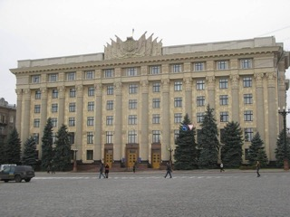
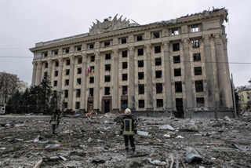

Місто Харків – великий український центр ділового та культурного життя. Його історія розпочалася 368 років тому.
Це найбільше місто на сході України, науковий центр України, адміністративний центр Харківської області. Друге за кількістю мешканців місто України з населенням 1 421 125 осіб. Площа міста — 350 км². Разом із прилеглими містами та районами утворює Харківську агломерацію з людністю понад 2 млн осіб. Місто-герой України (з 2022 року). Великий науковий, культурний, промисловий і транспортний осередок України. 60 науково-дослідних інститутів, 41 вищий навчальний заклад, серед яких ХНУ імені В. Н. Каразіна, який входить до найкращих 500 ВНЗ світу та НТУ «ХПІ», який входить до найкращих 1000, 8 музеїв, міська картинна галерея, 7 державних театрів і кілька десятків недержавних, 80 бібліотек.
6 березня 2022 року Указом Президента України з метою відзначення подвигу, масового героїзму та стійкості громадян, виявлених у захисті своїх міст під час відсічі збройної агресії Російської Федерації проти України місту присвоєно почесну відзнаку «Місто-герой України».
Географія
Найвищий пункт над рівнем моря 202 м (П'ятихатки (Харків)), найнижчий — 94 м (Новоселівка).З погляду рельєфу Харків поділяється на чотири низовинні й чотири підвищені райони. Стік річок творить улоговину, висунену з північного заходу на південний схід між Середньоруською височиною і Донецькою низовиною. Височини Харкова, переважно піщані, донедавна були вкриті сосновими і березовими лісами (Холодна гора, височина на північ від Лопані).
- з півночі на південь — 24,3 км
- з заходу на схід — 25,2 км
Райони
- Шевченківський
- Павлово Поле
- 23 Серпня
- Павлово Поле
- Новобаварський
- Київський
- Слобідський
- Холодногірський
- Салтівський
- Немишлянський
- Індустріальний
- Основ'янський
П’ять цікавих фактів про Харків
- в одному зі спальних районів проживає більше людей, ніж у Маямі;
- одяг вішають не на «плічка», а на «тремпель», їздять не на «трамваї», а на «дрифткарі», і носять не «взуття», а «педалі»;
- у побуті тут часто говорять російською, але вільно переходять на українську мову та готові горою стояти за свою країну та її культурну спадщину;
- люди гостинні та дедалі більше уваги приділяють іноземним мовам: на вулицях усе частіше можна почути англійську, німецьку, французьку, польську мови та, звичайно ж, рідну українську з різними діалектними словами;
- зовсім недалеко від центру діє найбільший в Україні ринок Барабашово, де можна купити все: від голки до рожевого слона.
Харків із 24.02.2022
24-го лютого о п’ятій ранку жителі Харкова прокинулися від звуків вибухів. Хтось намагався переконати себе, що це якісь провокації. Хтось просто злякався та вже не міг спати. Але для всіх людей ці звуки означили одне: росія розпочала повномасштабну війну. З самого початку російські військові аналітики вважали, що Харків не чинитиме опір нападу росії. Тому на цей напрямок окупанти кинули невелику кількість військ. Звичайно, вони отримали поразку. Помилково ворог уважав, що всі в Харкові – прихильники «руського міра». Насправді ж тут живуть українці, які досконало знають мову ворога. Те, що тут багато хто має родинні зв’язки з населенням сусіда-агресора, а на вулицях можна часто почути російську мову – це речі другорядні.Після провалу ідеї захопити місто майже «голіруч», російське командування віддало нищівні накази. Це схоже на криваву помсту за неочікувану «зраду». Російська армія почала геноцид цивільного населення – українців. Удари крилатими ракетами, системами залпового вогню «Град», бомбардувальником-ракетоносцем «Ту-22», вторгнення ворожими танками, артилерійські обстріли. Ба більше, удари реактивними системами «Ураган», ракетними комплексами «Іскандер», реактивними системами залпового вогню та мінометами великого калібру. Це неповний перелік зброї, якою окупанти розстрілювали цивільних, знищували житлові квартали та міську інфраструктуру. Мер Харкова Ігор Терехов повідомив, що в місті вже немає районів, що їх не пошкодили російські снаряди. Загалом од початку війни росія зруйнувала 2055 будівель. В облдержадміністрації зберігся лише фасад. Зсередини можна дивитись на небо – даху немає.
Харківська ОДА до пошкодження  Харківська ОДА після пошкодження 